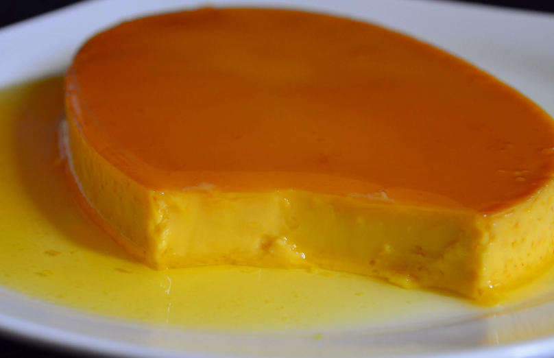

Leche Flan

Ingredients
- 9 tablespoons sugar
- 12 egg yolks, from large eggs
- 1 can (14 ounces) sweetened condensed milk
- 1 can (12 ounces) evaporated milk
Equipment
Instructions
- Place 3 tablespoons of sugar in each of the three llaneras.
- Set llanera on the stove over low heat and using tongs, move repeatedly over flames until sugar is melted and turns into a golden liquid.
- Continuously tilt and swirl the llanera to ensure even melting and to distribute the liquid on the bottom of the mold. Remo
- Remove from heat and allow caramel to cool and harden. Repeat the process with the remaining llanera.
- In a bowl, combine egg yolks and condensed milk. Whisk to combine.
- Add evaporated milk, gently stirring in a circular motion until blended.
- Using a cheesecloth or fine-mesh sieve, strain egg-milk mixture to remove stray egg whites.
- Pour mixture into prepared llaneras and cover tighly with foil Arrange in a a wide, oven-safe dish with about 1-inch of water (bain marie or water bath)..
- Bake in a 375 F oven for about 50 minutes to 1 hour or until a toothpick inserted in the middle of custard comes out clean.
- Remove from oven, allow to cool, and refrigerate to chill and completely set. To serve, turn flan over on a serving plate, ending with caramel on top.